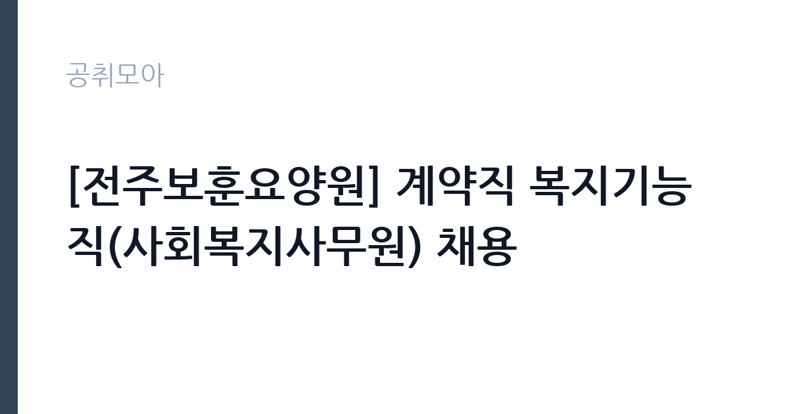

[공공기관] [전주보훈요양원] 계약직 복지기능직(사회복지사무원) 채용
한국보훈복지의료공단 · 전북 · 마감 2026-11-09 (D-11) · 출처 잡알리오

한눈에 보는 모집 조건
| 기관 | 한국보훈복지의료공단 |
|---|---|
| 공고명 | [전주보훈요양원] 계약직 복지기능직(사회복지사무원) 채용 |
| 고용형태 | 기간제 |
| 근무지 | 전북 |
| 게시일 | 2026-10-29 |
| 마감일 | 2026-11-09 (D-11) |
지원자격, 이렇게 읽으세요
- ㆍ채용 직무 관련 면허 또는 자격을 취득한 사람
- 회계자격증 1개 이상 보유자
- ※ 우대자격증 보유자의 경우, 면접전형에서 비정량적 우대사항을 반영함
기간제 근로자는 근로계약 기간이 정해진 신분입니다. 계약 기간과 갱신 가능 여부가 근로계약서에 명시되며 기간 만료 시 근로관계가 종료됩니다. 결원 보충이나 특정 사업 기간에 맞춰 채용되는 경우가 많아 업무 범위가 명확합니다. 이번 공고는 한국보훈복지의료공단에서 직접 진행하는 자체 전형으로, 응시자격과 제출서류는 공고문에 항목별로 제시됩니다. 사회복지사무원 채용은 학력·전공 제한을 두지 않는 대신 회계 업무 역량을 확인하는 경우가 많습니다. 전산세무·전산회계·회계관리 같은 자격을 우대하고, 관련 자격 보유자는 면접에서 비정량 요소로 반영됩니다. 사회복지사 자격을 요구하는 공고도 있으므로 모집분야별 요건을 확인해야 합니다. 계약 기간이 정해진 기간제 신분이고 정년 기준이 적용됩니다. 서류는 접수 마감 이후 보완이 되지 않으므로 자격 요건과 증빙 서류를 마감 전에 모두 갖춰야 합니다. 공고문에 명시된 우대 사항은 해당 여부를 확인해 증빙을 첨부해야 가점이 반영됩니다. 자격증은 유효 기간과 등록 상태를 확인해야 합니다. 갱신이 필요한 자격이라면 갱신 여부를 먼저 점검하십시오. 이 공고 원문에 적힌 응시 조건 문구는 'ㆍ학력, 전공, 나이, 성별 등 제한 없음' / 'ㆍ채용 직무 관련 면허 또는 자격을 취득한 사람' / '회계자격증 1개 이상 보유자'입니다. 문구를 그대로 읽고 본인 해당 여부를 하나씩 표시해 두면 서류 단계에서 탈락하는 일을 줄일 수 있습니다.
이 공고의 포인트
이 공고의 첫 번째 포인트는 고용 형태입니다. 계약 기간이 정해져 있어 근무 종료 시점이 명확합니다. 그만큼 짧은 기간에 어떤 실적을 남길지가 중요해집니다. 두 번째는 업무 범위가 명확하다는 점입니다. 복지행정(사회복지사무원) 직무로 채용되므로 배치 이후 담당 업무가 크게 흔들리지 않습니다. 세 번째는 근무지입니다. 전북 지역 근무로 수도권 공고에 비해 지원자 분포가 넓지 않아 상대적으로 경쟁이 분산되는 경우가 있습니다. 같은 기관의 다른 공고와 접수 기간이 겹치므로 중복 지원 가능 여부를 확인해야 합니다. 선발 인원은 공고문에 명시되어 있으니 모집분야 항목을 함께 확인하십시오.
전형은 어떻게 진행되나
전형은 서류심사와 면접심사를 기본으로 하고 직무에 따라 필기나 실기, 체력검정이 추가됩니다. 서류 단계에서는 응시자격 충족 여부와 제출서류 형식을 확인하며 이 단계에서 탈락하는 지원자가 적지 않습니다. 면접은 직무 이해도와 경험을 확인하는 방식으로 진행되고 발표는 개별 통보나 홈페이지 게시로 이뤄집니다. 최종합격 이후에는 결격사유 조회와 채용 신체검사가 이어지며 이 절차에서 문제가 확인되면 합격이 취소될 수 있습니다. 구체적인 전형 단계와 배점은 공고문에 표로 정리되어 있으니 원문을 기준으로 준비하십시오. 온라인 접수는 마감 시각이 분 단위로 정해지므로 시스템 시간을 기준으로 판단해야 합니다.
원문에서 확인한 전형 방식
(필수) ㆍ학력, 전공, 나이, 성별 등 제한 없음 ※ 단, 공고일 기준 정년(60세) 이상인 자는 지원 불가 ㆍ남성의 경우 군필 또는 면제자 ㆍ공단 인사규정 채용 결격사유에 해당하지 않는 자 (우대) ㆍ채용 직무 관련 면허 또는 자격을 취득한 사람 - 회계자격증 1개 이상 보유자 ※ 전산세무ㆍ전산회계ㆍ회계관리 2급 이상 또는 전산회계운용사ㆍ세무회계 3급 이상 ※ 우대자격증 보유자의 경우, 면접전형에서 비정량적 우대사항을 반영함
이런 분께 추천해요
- 회계 자격이나 정산 실무 경험이 있는 분
- 입소자·보호자 응대에 거부감이 없는 분
- 계약 기간 동안 지속적으로 근무할 수 있는 분
지원 전 체크리스트
- 응시자격 요건과 경력 기준을 충족하는가 — 경력은 증명서로 입증해야 합니다
- 계약 기간과 근무 시작일·종료일을 확인했는가
- 제출서류 목록을 모두 준비했는가 — 누락 시 서류 단계에서 탈락합니다
- 접수 마감 2026-11-09 이전에 접수 방식을 확인해 제출했는가
모집 일정과 제출 타이밍
접수 마감은 2026-11-09이고 공고는 2026-10-29에 게시되었습니다. 준비 기간 11일 안에 서류 작성, 증빙 발급, 접수를 모두 마쳐야 하므로 주말을 포함해 일정을 미리 나누는 것이 좋습니다. 특히 경력 기술서나 직무수행계획서를 요구하는 공고는 작성에 시간이 걸리므로 첫날 초안을 잡으십시오. 서류 합격자 발표와 면접 사이 간격이 짧은 경우가 많아 면접 예상 질문은 서류 제출 전에 정리해 두는 편이 유리합니다. 마감 직전에는 접속이 몰리므로 여유를 두고 제출하십시오. 임용 예정일이 빠르게 잡히는 공고이므로 현재 일정과 겹치지 않는지 미리 확인하십시오. 전북 근무지는 지역 내 시설 배치가 넓어 차량 유무가 실질적인 조건이 되는 경우가 있습니다. 마감까지 2주 안팎이 있어 준비할 시간은 있지만 미루면 촉박해집니다. 선발 인원은 공고문의 모집분야 항목에 직종별로 제시되어 있습니다.
직무 이해하기: 공공기관
공공기관은 도로와 수자원, 농지, 부동산 시장 관리 같은 공적 기능을 수행합니다. 현장 사업소는 도로와 시설 유지 관리, 조경과 환경 관리 업무를 직접 수행하며 계절 사업에 따라 기간제 인력을 채용합니다. 복지기능직 사회복지사무원은 요양원이나 복지시설에서 입소자 지원과 행정 실무를 함께 맡습니다. 입소 상담과 서류 접수, 급여비용 청구와 정산, 후원금·물품 관리 같은 회계 업무가 중심입니다. 입소자와 보호자 응대, 각종 신고와 보고 자료 작성도 일상 업무입니다. 요양기관 평가와 지자체 점검에 대비한 서류 정리가 몰리는 시기가 있습니다. 시설 운영 시간에 맞춰 근무하고, 교대나 당직이 포함될 수 있습니다. 업무는 혼자 처리하기보다 부서 단위로 나눠 진행되므로 담당 구역과 협업 범위를 입사 초에 확인하는 것이 중요합니다. 업무 강도와 근무 시간대는 부서 배치에 따라 달라지므로 면접에서 확인하는 것이 가장 정확합니다.
자기소개서 작성 팁
지원서는 회계·행정 실무 경험을 구체적으로 쓰는 것이 효과적입니다. 담당했던 정산 업무와 처리 건수, 사용한 회계 프로그램을 적으십시오. 보호자 응대에서 갈등을 줄인 사례도 좋은 소재입니다. 시설의 운영 형태와 입소자 특성을 미리 확인해 지원 동기에 연결하면 준비도가 드러납니다. 직무 경험이 많지 않다면 경험의 양보다 과정을 구체적으로 쓰는 편이 낫습니다. 어떤 상황에서 무엇을 판단했고 어떤 결과가 나왔는지 순서대로 서술하면 신뢰가 생깁니다. 지원 동기와 기여 방안은 한 문단씩 짧게 유지하고, 가장 자신 있는 경험에 분량을 몰아주십시오. 마지막 문장은 포부보다 구체적인 실행 계획으로 끝내는 것이 좋습니다.
면접 준비 포인트
면접에서는 회계 처리와 응대 방식을 확인합니다. 증빙이 맞지 않는 지출을 발견하면 어떻게 처리할지, 보호자가 급여비용에 이의를 제기하면 어떤 순서로 확인할지 묻습니다. 개인정보와 의료·복지 정보를 다루는 직무이므로 보안 의식을 언급하십시오. 시설 근무 경험이 있다면 입소자 응대 사례로 연결하십시오. 답변은 상황, 판단, 조치의 순서로 정리하면 전달이 분명해집니다. 모르는 질문에는 모른다고 밝히고 확인 방법을 제시하는 편이 억지 답변보다 낫습니다. 마지막에는 근무 의사와 함께 2026-11-09 이후 일정에 언제든 응할 수 있다는 점을 전달하십시오. 마지막 질문 시간에는 근무 조건에 대한 확인 사항을 한 가지 정도 준비해 가면 성실성이 드러납니다.
급여·근무조건 읽는 법
알리오(공공기관 경영정보 공개시스템) 2025년 결산 경영공시 기준으로 한국보훈복지의료공단 일반정규직 1인당 평균보수액은 7,172만원, 공시된 신입사원 초임은 4,170만원입니다. 평균보수액은 기본급에 고정수당·실적수당·성과상여금·급여성 복리후생비를 모두 합산한 값이라 월 기본급만 보고 판단하면 실제와 크게 어긋납니다. 이번 공고는 기간제 채용이라 위 정규직 평균보수는 그대로 적용되지 않습니다. 기간제 보수는 기관의 기간제 임금 기준을 따르며 계약 기간이 함께 정해집니다. 보훈복지의료공단 계약직 보수는 공단의 계약직 임금 기준을 따르며, 기본급에 수당과 상여가 더해집니다. 계약 기간이 정해져 있어 월 보수와 근무 개월 수를 곱한 총액으로 비교해야 합니다. 정확한 금액과 수당 항목은 공고문 처우 항목에서 확인하십시오. 2026년 적용 최저임금은 시급 10,320원, 월 환산 2,156,880원(주 40시간·209시간 기준)입니다. 고용노동부 고시 제2025-47호로 확정된 금액입니다. 공고문에 금액이 제시되지 않은 항목은 원문 보수표나 처우 설명에서 확인해야 하며 확인되지 않은 수치는 쓰지 않는 것이 원칙입니다. 비교할 때는 월 급여뿐 아니라 상여·명절휴가비·복지포인트·초과근무수당까지 포함한 연간 총액으로 계산하십시오. 기간제라면 계약 기간 동안의 총액을, 무기계약이라면 호봉 상승과 정년까지의 누적 소득을 기준으로 판단하는 편이 정확합니다.
자주 묻는 질문
- 선발 인원은 몇 명인가요?
공고문의 모집분야 항목에 직종별 인원이 표로 제시되어 있습니다. 첨부된 공고문 원문에서 확인하십시오. - 근무지는 어디인가요?
전북 지역의 한국보훈복지의료공단 소속 근무지입니다. 세부 주소와 출퇴근 조건은 원문 공고문에서 확인할 수 있습니다. - 보수는 얼마인가요?
채용 신분(기간제)과 기관 임금 규정에 따라 정해지며 구체적인 금액은 공고문 처우 항목에 제시됩니다. 금액이 공개되지 않은 경우에는 원문의 보수표를 확인하십시오.
함께 보면 좋은 공고
[공공기관] 2026년 (재)한국에너지재단 제2차 기간제 채용 공고(채용 제2026-06호) — 마감 2026-11-13[공공기관] 한국고전번역원 2026년 4분기 제2차 직원 신규 채용 — 마감 2026-11-05[공공기관] 계약직 연구원/행정(전북응급의료지원센터) 채용 재공고 — 마감 2026-11-09출처: 잡알리오 공개정보를 바탕으로 공취모아가 정리한 안내글입니다. 모집 조건·일정은 변경될 수 있으니 지원 전 반드시 원문 공고문을 확인하세요. 본 글은 정보 제공용이며 합격을 보장하지 않습니다.